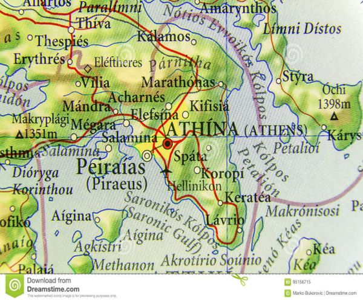
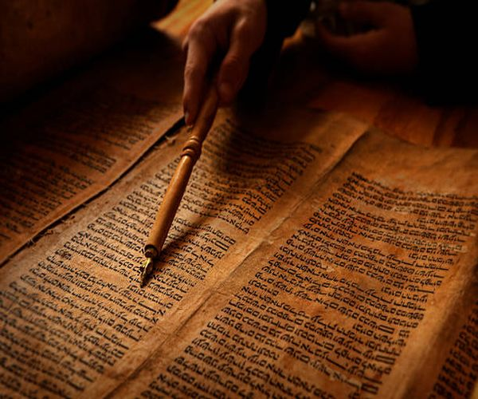
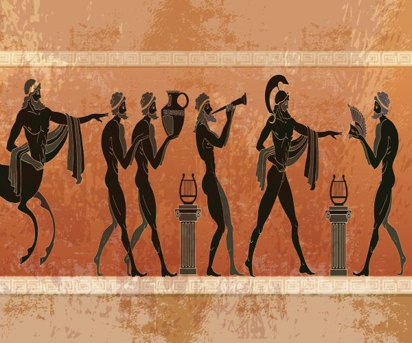
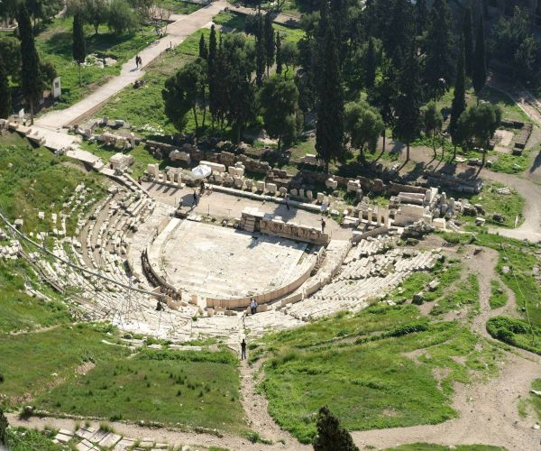
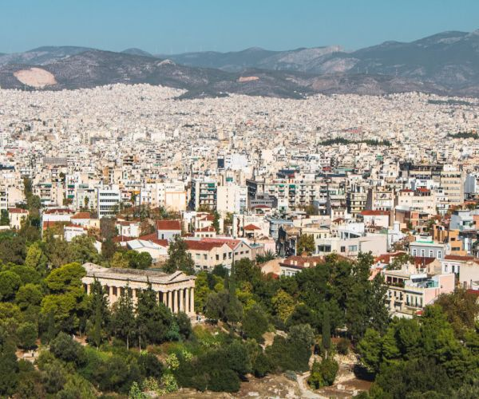
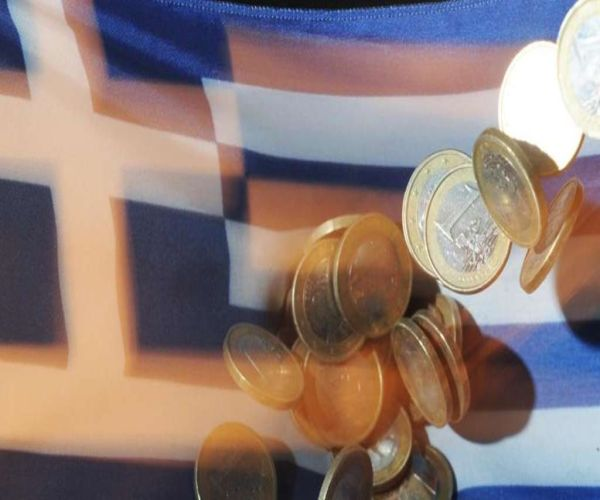

Übersicht:
- 
- 
- 
- 
- 
- 
Geographie
Athen liegt in der weiträumigsten Ebene der Landschaft Attika mit den Flüssen Ilisos und Kifisos und ist an drei Seiten von Gebirgszügen umgeben... Weiter lesen
Geschichte
Der Streit von Poseidon und Athena um das attische Land fiel in seine «Amtszeit». Athena pflanzte den ersten Ölbaum neben das Erechtheidon... Weiter lesen
Kultur und Kunst
Aus allen Teilen der antiken Welt kamen zur klassischen Zeit Wissenschaftler nach Athen, dies wurde von dieser gefördert. Es wurde unterschieden zwischen Xenoi und Metöken...Weiter lesen
Sehenswürdigkeiten
Top 3 Sehenswürdigkeiten... Weiter lesen
Stadtbild
Die Anlage des heutigen Zentrums entstand im 19. Jahrhundert auf Grundlage des Stadtplans von Eduard Schaubert und Stamatios Kleanthis. Fast alle wichtigen öffentlichen Bauten wie... Weiter lesen
Wirtschaft
Laut einer Studie aus dem Jahr 2014 erwirtschafte der Großraum Athen ein Bruttoinlandsprodukt von 129,62 Milliarden US-Dollar in Kaufkraftparität. Athen ist vor Thessaloniki... Weiter lesen